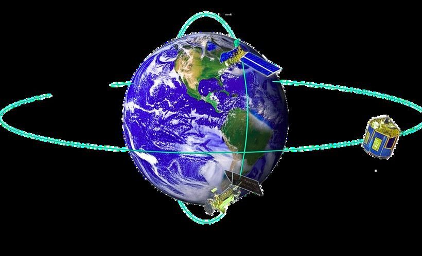
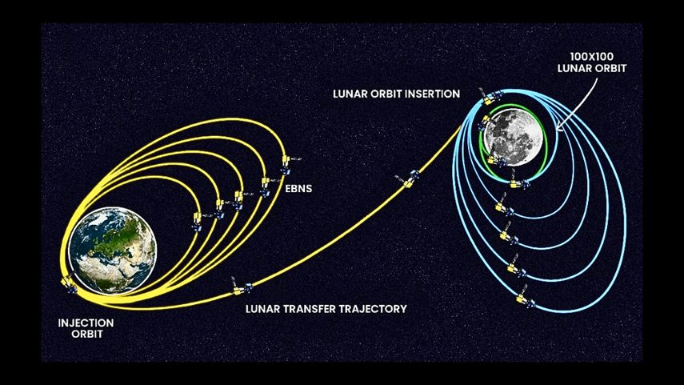
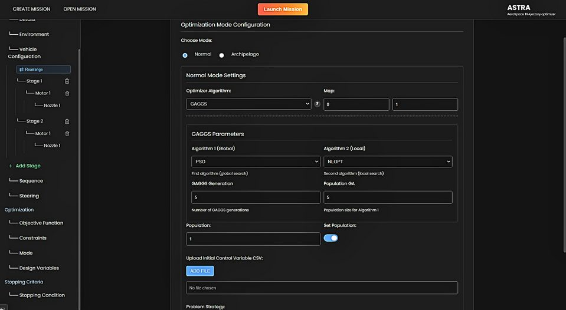
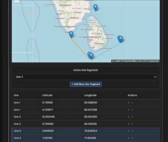

PRODUCT 01 — ASTRA
ASTRA
AeroSpace TRAjectory Optimizer
Optimizer and three degrees of freedom simulator together form ASTRA.
AEROSPACE MISSION DESIGN, PLANNING AND ANALYSIS TOOL
Three-dimensional emblem: eleven candidate ascent trajectories fan out from a launch site on the Earth's limb towards a target orbit; the optimum trajectory is drawn in magenta and traced by a travelling marker.
- Degrees of freedom
- 3DOFOptimizer and simulator in one tool
- Mission domains
- 6Launcher · Satellites · Missiles · Re‑entry · Interplanetary · Human space
- Input
- JSONDirect JSON input or an auto-generating UI
- Data
- CSVImport and export capabilities
02 / 08 — SPACE MISSIONS
Six mission domains, one optimizer.
Unlock breakthrough capabilities, from advanced human spaceflight systems to intelligent satellite constellations and deep space exploration initiatives.
- DOMAIN 01LauncherTrajectory optimization for orbital and sub-orbital launches.
- DOMAIN 02SatellitesOrbit transfer, deorbiting, and constellation management.
- DOMAIN 03MissilesSimulation for tactical and strategic missile trajectories.
- DOMAIN 04Re-entryModeling of high-speed atmospheric re-entry dynamics.
- DOMAIN 05InterplanetarySupport for lunar and deep space mission analysis.
- DOMAIN 06Human SpaceAdvanced planning for manned mission trajectories.
03 / 08 — MISSION DESIGN AND PLANNING
From concept through deployment.
Our solutions are expertly crafted for aerospace vehicles, ensuring seamless execution from concept through deployment.
- 01 / 06Configuration DesignDesign configurations for launch vehicles, re-entry vehicles, missiles, satellites, and projectiles.
- 02 / 06Satellite Mission PlanningPlan missions for LEO, SSO, GSO, and GTO satellite deployments with precision targeting.
- 03 / 06Manned Mission ScenariosSupport advanced manned mission profiles including rendezvous, docking, and return phases.
- 04 / 06Constellation & Swarm FlyingDesign and manage coordinated trajectories for satellite swarms and constellations.
- 05 / 06Interplanetary & Lunar MissionsPlan mission phases for lunar transfers, interplanetary flybys, and orbit insertions.
- 06 / 06Multi-Body SimulationSimulate dynamics with multiple gravitational bodies and custom reference frames.


Animated three-dimensional stage: as the page scrolls, the eleven candidate ascent trajectories converge in forty-eight iterations onto the single optimum trajectory between the launch site and the target orbit.
STEP 01 — 04 / 08 · HOW IT CONVERGES
Define vehicle and phases
Configure the vehicle and its stages, then lay out the mission as an event-driven sequence. Use direct JSON input or the auto-generating UI; dependent parameters populate themselves.
STEP 02 — CONSTRAINTS AND OBJECTIVE
Set constraints and objective
Attach mission-related objective functions and constraints to the target orbit, and choose the stage-wise steering and sequence variables the optimizer is free to work on.
STEP 03 — CONVERGE
Converge
Gradient-based parameter and control optimization, or global hybrid techniques, iterate the candidate trajectories toward the optimum until the objective settles and every constraint is nominal.
STEP 04 — EXPORT AND ITERATE
Export and iterate
Export the result as CSV, persist the mission state and reload it later to iterate. Past saved missions remain a click away.
SIMITER 000 / 048 · ΔV — · CONSTRAINTS SET
05 / 08 — MISSION ANALYSIS + OPTIMIZATION
Analyse the mission. Optimize the trajectory.
Your all-in-one solution for mission analysis — from orbit propagation and collision risk to Monte Carlo studies and re-entry safety.
Mission Analysis
- 01Visibility Analysis
- 02Range Safety Analysis
- 03Long-term & short-term orbit propagation
- 04Monte Carlo analysis for probabilistic assessment
- 05Collision & Conjunction Analysis
- 06Proximity Operations & Mitigation strategies
- 07Re-entry Safety & Risk Analysis
Optimization
Accelerate your mission success with cutting-edge global hybrid optimization techniques that drive precision and efficiency in every phase of mission design and planning.
- 01Gradient based parameter and control optimization
- 02Global hybrid optimization techniques
- 03Mission-related objective functions & constraints
- 04Stage wise steering and sequence optimization
06 / 08 — MODEL LIBRARIES + GENERIC CHARACTERISTICS
Nine model libraries behind every mission.
Gravity, planets, atmospheres, winds, propulsion, aerodynamics, propagators, time bases and reference frames — the models every ASTRA mission is computed against.
- LIB 01Gravity field (Harmonics, J2)
- LIB 02Planet model (Earth, Moon, Mars)
- LIB 03Atmosphere (NRLMSISE, JB2006)
- LIB 04Wind Models
- LIB 05Rocket Propulsion
- LIB 06Aerodynamics
- LIB 07Numerical Propagations
- LIB 08Time bases (TT, UTC, GPS)
- LIB 09Predefined Frames (J2000, ECEF)
Generic Characteristics
How a mission is set up, saved and reloaded in ASTRA.
- 01Supports direct JSON input or an auto-generating UI
- 02Reload functionality of past saved missions
- 03Event-driven sequence management
- 04Auto-population of dependent parameters
- 05CSV data import/export capabilities
- 06Mission state persistence and reload


08 / 08 — NEXT
Request an ASTRA demonstration.
See mission design, planning, analysis and optimization in one aerospace tool.